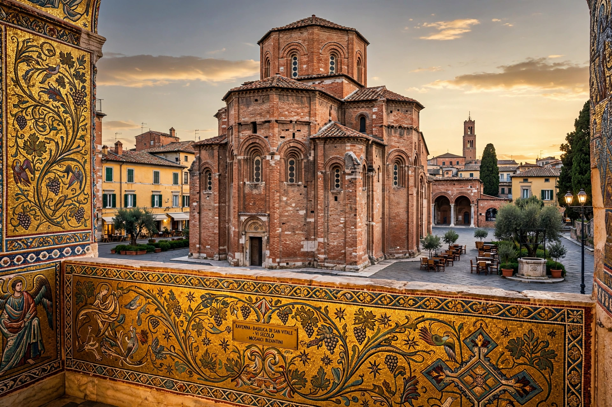

Ravenna is a city in Emilia-Romagna, Italy, capital of the Province of Ravenna, famed for its exceptionally preserved late-antique and Byzantine mosaics. It was capital of the Western Roman Empire (402–476), then of the Ostrogothic Kingdom and the Byzantine Exarchate of Ravenna.

Founded in antiquity and a major Roman naval port (Classis), Ravenna became imperial capital under Honorius in 402 due to its marshy defences and Adriatic port. It fell to Odoacer (476) and Theodoric the Ostrogoth, then was reconquered by Justinian's general Belisarius in 540, serving as Byzantine Italy's capital until captured by Lombards in 751. Dante Alighieri died here in 1321 and is buried here.
Eight UNESCO monuments include the Basilica of San Vitale, Mausoleum of Galla Placidia, Basilica of Sant'Apollinare Nuovo and in Classe, and the Arian and Neonian baptisteries — masterpieces of early Christian and Byzantine art.
Today Ravenna is an agricultural, industrial and port city, connected to the Adriatic by canal, near resorts of the Romagna Riviera.